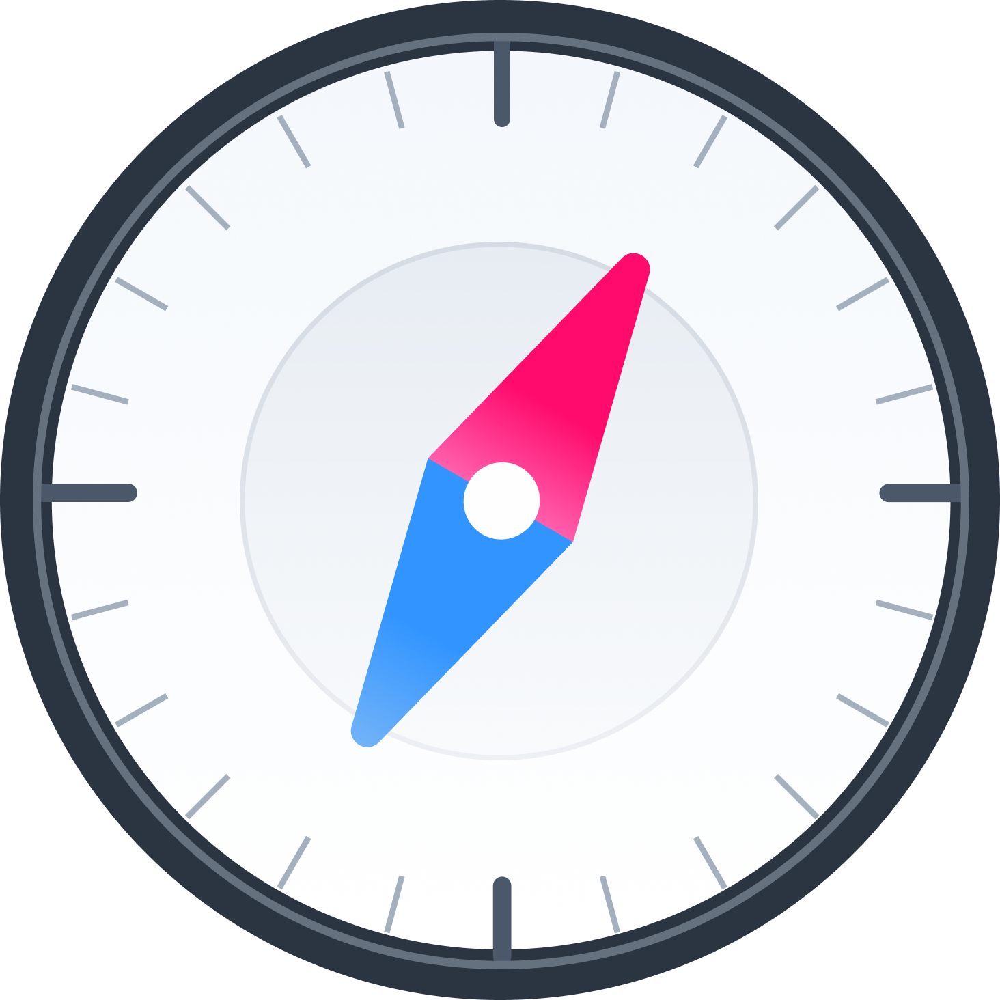
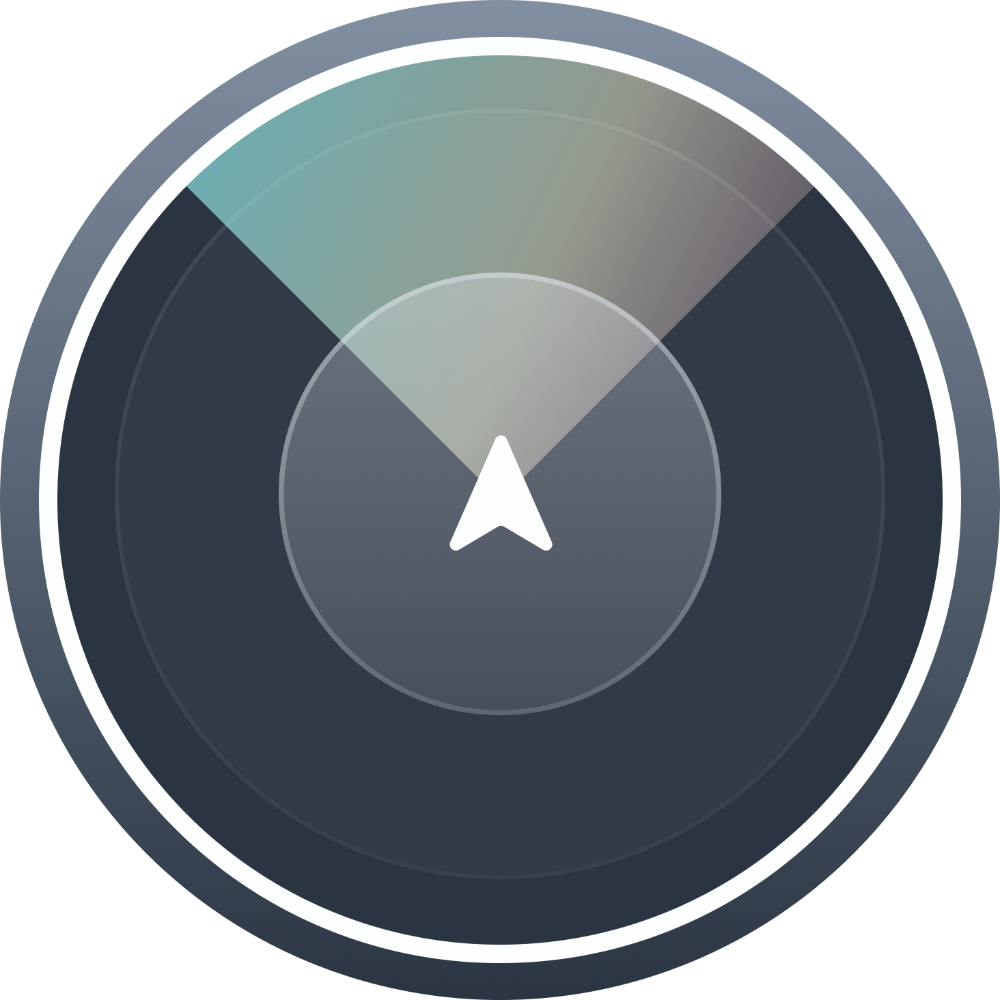
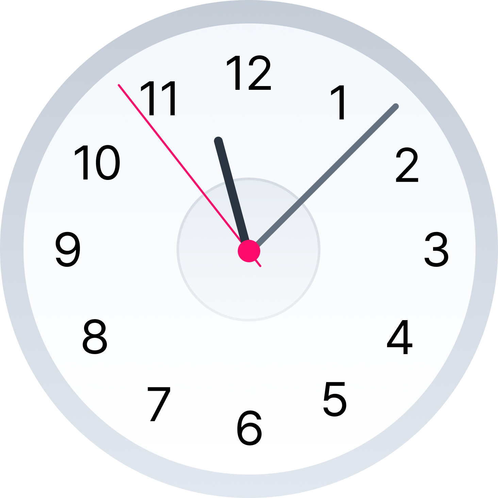
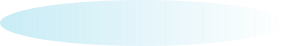
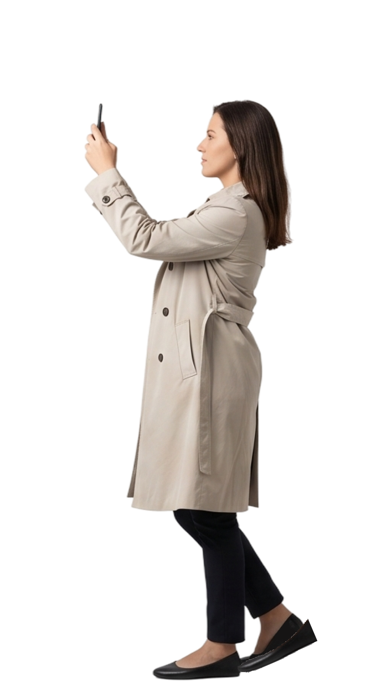

음성 발화Voice Input
사용자가 직접 건네는 발화 신호의 경우 음성 데이터와 함께 목소리의 톤, 높낮이, 속도 등 미세한 운율 모두를 명시적 인풋으로 포착합니다.
말하기 전, 스킵은 이미 귀 기울이고 있죠.
언제든 주변을 살피며 다음을 준비합니다.

24시간 조용히 찰나를 준비하는 일
당신이 경험하는 모든 시간이 곧 스킵의 시간
주변 공간의
물리적 도메인을
상시 탐색
지능형
반사 표면
제어
스킵은 패킷을
통해 자신을
환경에 모핑함


Sensing Logic
스킵은 당신이 발을 내딛기도 전에 공간의 돌다리를 먼저 두드려봅니다.
첨단 RIS* 기술과 정밀 무선 통신으로 주변을 탐색하여,
안전하게 디딜 수 있는 주변 환경과 그 기능들을 실시간으로 리스트업하죠.
이제 철저하게 확인된 디딤돌 위에서, 그저 물수제비를 뜨듯 가볍게 흐름을 이어가기만 하면 됩니다.
Sensing Logic
스킵의 패시브 레이어는 배경에서 끊임없이 움직이고 있습니다.
당신이 깊이 잠든 새벽이든, 분주하게 움직이는 낮이든, 어디에 있든 말이죠.
덕분에 목적이 생기는 그 찰나, 곧바로 완벽한 실행 경로가 완성됩니다.





당신의 모든 걸음은 스킵의 새로운 기준이자 세상이 됩니다.
걸음을 옮길 때마다, 센싱 로직이 배경에서 끊임없이 함께하니까요.
Input Logic
완벽하게 다듬어진 지시나 명령은 필요 없습니다. 스킵은 발화의 운율과 문장 속 섬세한 단서에서 맥락을 완벽하게 파악하니까요. 때로는 말하지 않더라도, 당신의 마음을 찰떡같이 알아줍니다.
사용자가 직접 건네는 발화 신호의 경우 음성 데이터와 함께 목소리의 톤, 높낮이, 속도 등 미세한 운율 모두를 명시적 인풋으로 포착합니다.

타이핑을 통해 입력된 문자 신호의 경우 구두점이나 부사처럼 사용자가 텍스트에 남긴 미세한 흔적들을 명시적 인풋으로 획득합니다.

사용자가 직접 말하지 않은 암묵적 신호로, 스키퍼블에 있는 외재적 데이터와 사용자 고유의 내재적 루틴을 입체적으로 종합해 받아들입니다.
Input Logic
목적이 시작되는 이 순간은 액티브 레이어라는 거대한 시공간적 바운더리가 열리는 시점입니다. 이제 사용자의 목적은 A2A 연산 형태로 변환되며 본격적인 연산이 시작되죠.
Active Layer
사용자의 목적이 최초로 발생한 시점부터 달성되는 시점까지의 시공간적 바운더리
Pause Logic
2보 전진을 위한
1보 후퇴
완벽한 스킵에게도 때로는 쉴 틈이 필요합니다.
명시적인 명령이 있거나 스킵 불가 영역을 마주할 때
작동하는 일시중단 로직은 시스템을 완전히 종료하는
대신에 목적 단위로 잠시 숨을 고르게 만들죠.
Principle 01
스킵과의 직접 상호작용은 잠시 멈추지만,
여전히 센싱을 통해 준비 상태를 유지합니다.
Principle 02
스킵은 사용자의 발화 단서를 미리 추론하여
예측되는 다음 시공간 속에서 기다립니다.
Principle 03
새로운 목적 구간이 시작되는 순간 별도의
조작 없이 깨어나며, 흐름을 복구합니다.